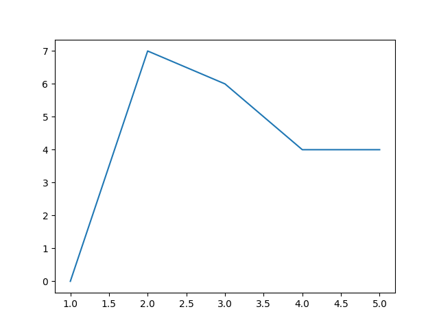
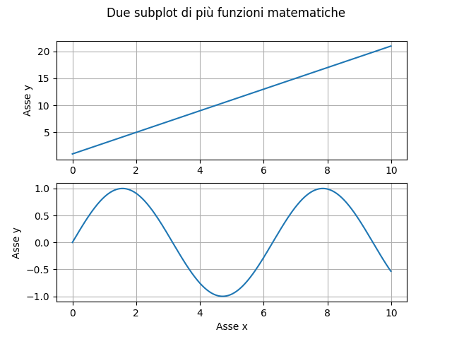
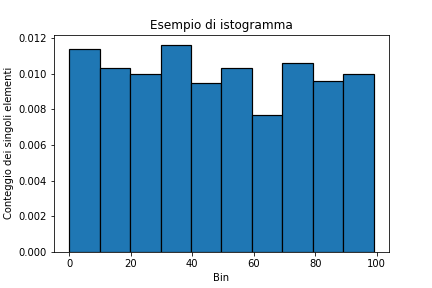
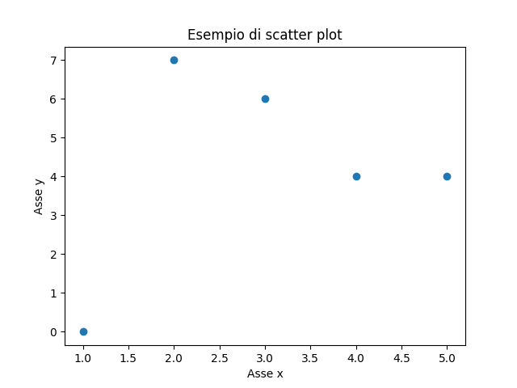
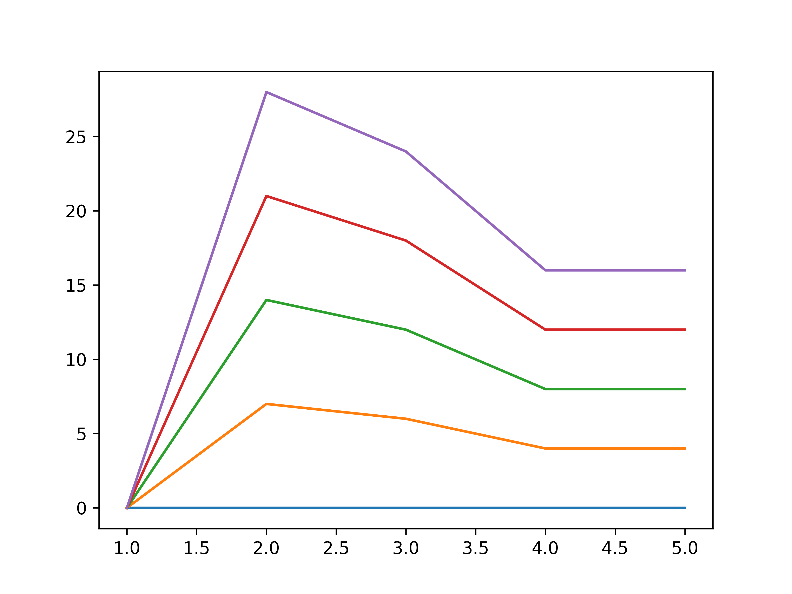

4.1 - Matplotlib¶
Nelle lezioni precedenti, ci siamo limitati a visualizzare i risultati ottenuti usando l'output fornito dalla riga di comando o dal notebook Jupyter/Colab. Tuttavia, è chiaro come questo modo di procedere sia giocoforza limitante: cosa ne è di tutti i coloratissimi grafici che possiamo ammirare in siti ed articoli scientifici? Saranno per caso relegati esclusivamente al mondo di Excel?
In realtà, per ottenerli dovremo necessariamente integrare il nostro ambiente di lavoro con altre librerie. Ne esistono diverse, ma la più utilizzata è senza dubbio Matplotlib, cui si può affiancare Seaborn, che tratteremo in una delle prossime lezioni.
Setup della libreria¶
Prima di utilizzare Matplotlib, dovremo ovviamente installare la libreria. Per farlo, abbiamo al solito le opzioni mostrate in appendice; di seguito, riportiamo l'opzione di installazione tramite pip:
Passiamo poi ad importare la libreria all'interno del nostro programma. In particolare, il package più utilizzato è pyplot che, come dice la documentazione, altro non è che un insieme di funzioni (palesemente) ispirate a MATLAB. Useremo quindi un alias per questo package:
Saremo a questo punto pronti per utilizzare le funzioni messe a disposizione da Matplotlib.
Il primo plot¶
Per creare il nostro primo plot, utilizziamo il seguente codice:
In particolare:
- alla riga 1, creiamo un generatore di numeri casuali;
- alla riga 2, definiamo tutti i valori di
xcompresi nell'intervallo tra 1 e 5 usando la funzionenumpy.arange(); - alla riga 3, definiamo tutti i valori di
ycome valori interi casuali compresi tra0e10; - alla riga 4, creiamo una
figureed unaxesmediante il metodosubplots(); - alla riga 5, effettuiamo il plot su
ax, mettendo come ascissa i valori dix, e come ordinata quelli diy; - alla riga 6, chiamiamo il metodo
show()per mostrare a schermo il grafico ottenuto.
Se tutto è andato per il verso giusto, dovremmo vedere a schermo l'immagine mostrata nella figura 1.

Suggerimento
Se avete seguito pedissequamente il tutorial, a schermo dovrebbe essere visualizzata esattamente l'immagine mostrata nella figura 1. Questo perché al generatore di numeri (pseudo) casuali viene passato il parametro seed, usato come base per la generazione degli stessi, che risulteranno quindi essere sempre gli stessi, indipendentemente dall'iterazione.
Figure ed assi¶
L'esempio precedente ci permette di illustrare in poche righe di codice tutti i concetti su cui si basa Matplotlib. Tuttavia, è opportuno scendere maggiormente nel dettaglio.
In particolare, alla base del funzionamento di Matplotlib ci sono quattro classi fondamentali.
La classe Figure¶
Per prima cosa, ci sono le Figure, rappresentative dell'intera area mostrata a schermo da Matplotlib. Un oggetto di questa classe conterrà un numero arbitrario di elementi, permettendone visualizzazione e contestuale manipolazione.
La classe Axes¶
Gli oggetti di classe Axes, rappresentano l'area della Figure all'interno della quale saranno visualizzati i dati. La relazione tra Figure ed Axes è strettamente gerarchica: in pratica, una Figure può avere diversi Axes, ma ogni Axes appartiene esclusivamente ad una Figure.
La classe Axis¶
All'interno di un oggetto Axes troviamo poi due o tre oggetti di tipo Axis, ognuno dei quali rappresenta l'asse vero e proprio. In altri termini, avremo due Axis per i plot bidimensionali, rappresentativi degli assi \(x\) ed \(y\), ed un terzo Axis per i plot tridimensionali, rappresentativo ovviamente dell'asse \(z\). Gli oggetti Axis ci permettono quindi di definire gli intervalli dati, l'eventuale griglia, e via discorrendo.
Axes ed Axis
Fate attenzione a non confondere gli Axes con gli Axis! In pratica: gli Axes sono i singoli plot, mentre gli Axis sono gli assi contenuti in ciascun plot.
La classe Artist¶
L'ultimo concetto fondamentale di Matplotlib è quello degli artist, oggetti derivati dalla classe base Artist, delegata al rendering vero e proprio dei plot.
Rivisitazione dell'esempio precedente¶
Torniamo brevemente al precedente snippet. La funzione subplots() ci servirà quindi a creare un oggetto di tipo Figure assieme agli Axes desiderati:
A questo punto, possiamo plottare i valori di x ed y su nostro oggetto Axes, che conterrà a sua volta due Axis, uno per l'asse delle \(x\), e l'altro per l'asse delle \(y\):
Vediamo adesso qualche esempio più significativo
Esempio 1: Plot di più funzioni¶
L'obiettivo di questo esempio è mostrare su uno stesso Axes due diverse funzioni. In particolare, scegliamo come funzioni da rappresentare una retta ed una funzione seno.
Per prima cosa, definiamo i nostri dati:
Alla riga 1, definiamo l'intervallo sull'asse \(x\) come quello compreso tra \(0\) e \(10\) e campionato a passo \(0.01\). Così facendo, avremo un campionamento molto fitto, con un totale di \(1000\) punti considerati. Alla riga 2 definiamo la nostra retta, la cui equazione sarà \(y = 2x + 1\), mentre alla riga 3 andremo a definire la funzione seno.
Adesso, creiamo la nostra Figure con relativo Axes, ed effettuiamo il plot di entrambe le funzioni.
fig, ax = plt.subplots()
ax.plot(x, y_1, label='Retta')
ax.plot(x, y_2, label='Funzione sinusoidale')
Notiamo la presenza del parametro label che indica l'etichetta assegnata ai due plot; questa sarà utilizzata successivamente per generare la legenda. Passiamo adesso ad impostare il titolo e le label sugli assi \(x\) e \(y\) usando rispettivamente le funzioni set_title(), set_xlabel() e set_ylabel():
Usiamo adesso la funzione grid() per mostrare una griglia sulla figura, e la funzione legend() per far apparire la legenda che descrive le funzioni visualizzate.
In ultimo, mostriamo a schermo la figura con la funzione show():
Il risultato ottenuto è mostrato in figura 2.

Esempio 2: Subplot multipli¶
Alle volte, può essere conveniente affiancare più subplot all'interno di un unico plot principale. In tal senso, abbiamo in precedenza detto che possiamo definire più Axes per un'unica Figure; per farlo, possiamo parametrizzare la funzione subplots(i, j), in maniera tale che vengano creati \(i \times j\) plot all'interno della stessa figura.
Per creare 2 subplot in "riga", ad esempio, parametrizzeremo subplots() come segue:
Notiamo la presenza di due Axes, rispettivamente ax_1 ed ax_2. Ognuno di questi potrà essere trattato come descritto in precedenza.
Per prima cosa, usiamo la funzione suptitle() sulla Figure fig per dare un titolo all'intero plot:
A questo punto, procediamo ad effettuare i plot sui relativi assi:
# Primo subplot
ax_1.plot(x, y_1, label='Retta')
ax_1.set_xlabel('Asse x')
ax_1.set_ylabel('Asse y')
ax_1.legend()
ax_1.grid()
# Secondo subplot
ax_2.plot(x, y_2, label='Funzione sinusoidale')
ax_2.set_xlabel('Asse x')
ax_2.set_ylabel('Asse y')
ax_2.legend()
ax_2.grid()
Mostriamo quindi a schermo il plot:
Il risultato sarà simile a quello mostrato in figura 3:

Esempio 3: Istogramma¶
Abbiamo già parlato degli istogrammi in NumPy. Tuttavia, un istogramma raggiunge la massima espressività possibile quando ne si utilizza la rappresentazione visiva. In tal senso, Matplotlib ci offre una funzione apposita chiamata hist().
Proviamo ad utilizzarla. Per farlo, creiamo in primis un vettore di \(1000\) numeri interi casuali compresi tra \(0\) e \(100\).
Al solito, creiamo la nostra figura, ed usiamo la funzione hist() passandogli il vettore x creato in precedenza e il parametro density, che ci permetterà di normalizzare l'istogramma (ovvero, fare in modo tale che la sommatoria dei singoli bin sia esattamente pari ad 1).
Notiamo anche l'uso dei parametri edgecolor, che permette di impostare il colore del bordo di ciascuna barra dell'istogramma, e linewidth, che consente di specificarne lo spessore.
Al solito, usiamo i metodi opportuni per impostare titolo e label degli assi, e mostriamo la figura.
ax.set_xlabel('Bin')
ax.set_ylabel('Conteggio dei singoli elementi')
ax.set_title('Esempio di istogramma')
plt.show()
Il risultato sarà simile a quello mostrato nella figura 4.

Esempio 4: Scatter plot¶
Lo scatter plot è una modalità alternativa di mostrare la distribuzione dei dati lungo gli assi \(x\), \(y\) ed, opzionalmente, \(z\). In particolare, questo tipo di visualizzazione differisce dal normale plot in quanto i singoli punti dati non sono collegati da una linea, ma rappresentati in modo discreto, ed è particolarmente utile quando si vuole valutare visivamente la distribuzione di una serie di dati in due o tre dimensioni. Ovviamente, Matplotlib ci mette a disposizione un'apposita funzione per la visualizzazione di questo tipo di plot, chiamata scatter().
Il funzionamento è totalmente analogo al plot(). Ad esempio, considerando i valori di x ed y utilizzati nel primo esempio del tutorial, potremmo generare uno scatter plot come segue:
rng = np.random.default_rng(42)
x = np.arange(1, 6)
y = rng.integers(low=0, high=10, size=5)
fig, ax = plt.subplots()
ax.set_xlabel('Asse x')
ax.set_ylabel('Asse y')
ax.set_title('Esempio di scatter plot')
ax.plot(x, y)
plt.show()
Il risultato sarà simile a quello mostrato in figura 5.

Note finali: salvataggio e chiusura di una figura¶
Chiudiamo questa breve carrellata specificando che, per salvare una figura, è necessario usare la funzione savefig(), che accetta come primo parametro il nome del file su cui salveremo l'immagine:
Oltre a questo, dei parametri molto utili da utilizzare sono dpi, che ci permette di specificare la risoluzione della figura, e bbox_inches, per il quale il suggerimento è di impostarlo a tight per evitare eccessivi spazi bianchi attorno alla figura (o, al contrario, il taglio di parti delle label).
Infine, facciamo un cenno alla funzione close(), delegata alla chiusura di un oggetto di tipo Figure:
La funzione close() assume particolare rilevanza nel momento in cui vogliamo, ad esempio, plottare diverse figure al variare di alcune condizioni, come ad esempio in un ciclo. Infatti, se non chiudessimo la figura attuale al termine di ciascuna iterazione, Matplotlib andrebbe a disegnare la nuova funzione sempre sulla stessa figura. Ad esempio:
In questo caso, dato che non stiamo chiudendo la figura, avremo un risultato come visto in figura 6.

Se invece chiamassimo sempre la close(), all'ultima iterazione avremmo il plot mostrato in figura 7.

Nella prossima lezione, approfondiremo l'utilizzo di una libreria discendente da Matplotlib, ovvero Seaborn.